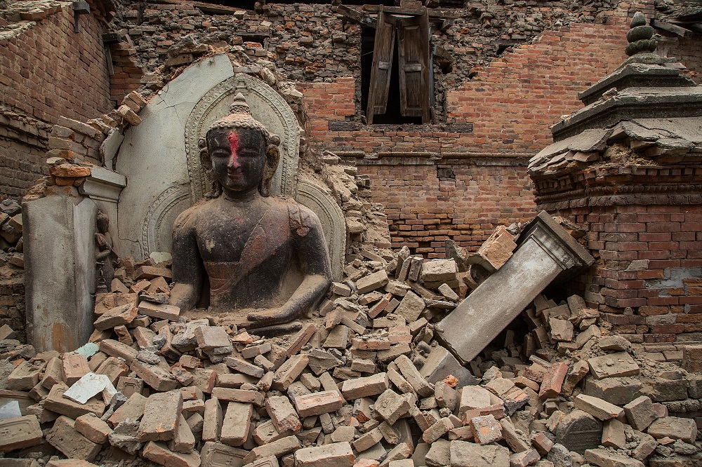
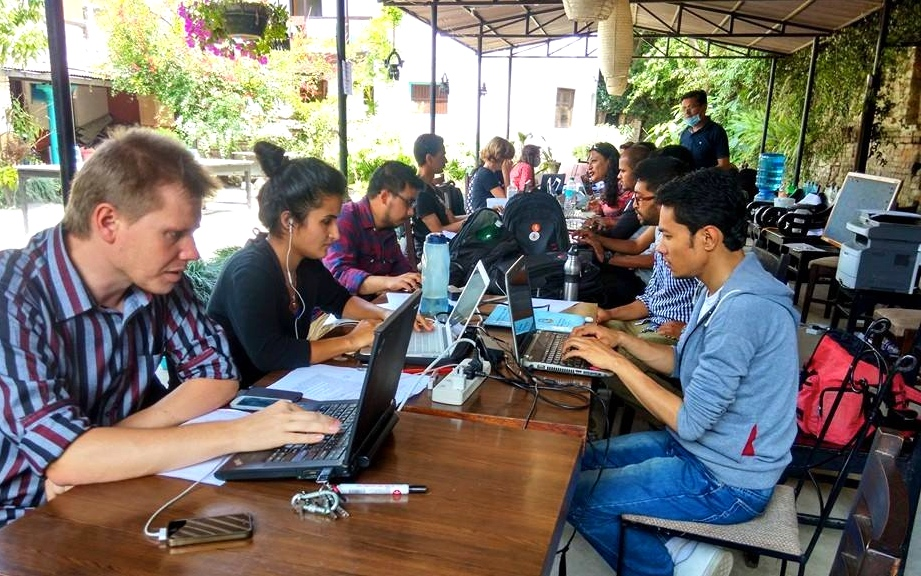
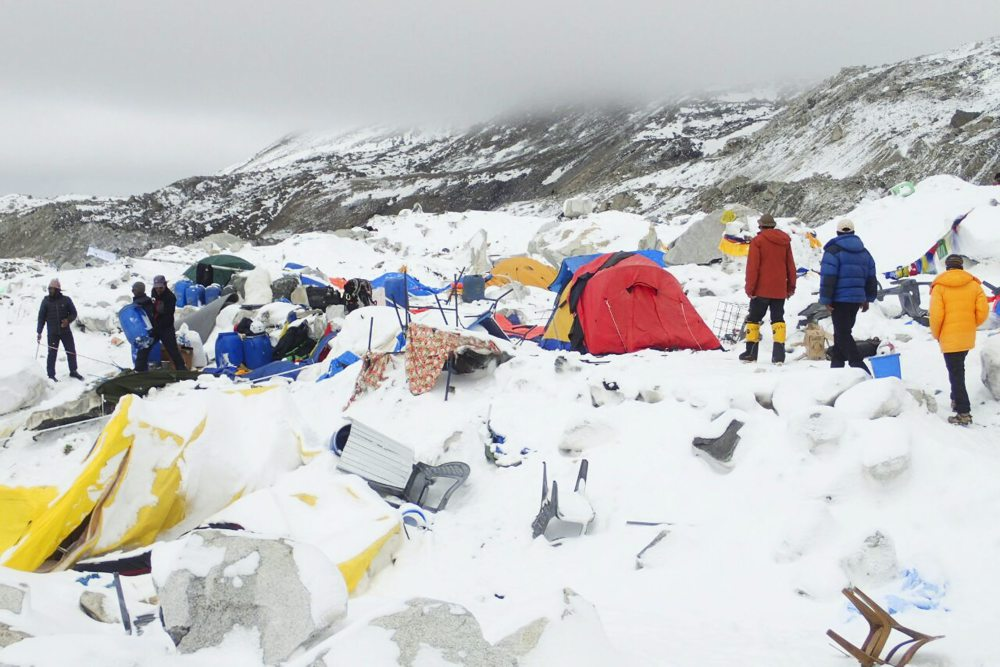

Immediately after the earthquake hit, it was clear that the extent of the damage was huge. Nonetheless, aid organizations struggled to gather more information about what help exactly was needed where. The difficult terrain and the extensive damage to infrastructure made it very difficult to access remote areas, which led to even greater suffering in these communities.
The disaster response: an information disaster
Information is perhaps the most critical resource in the aftermath of an emergency. In a battle against the clock, emergency workers try to determine what communities have suffered from the emergency and what kind of help they need. In the end, it is the availability of information that determines whether relief is sent, or not: if aid organizations do not know that a community needs them, help will never come. Traditionally, aid organizations like the United Nations have relied on their own staff to gather this information. Information is collected in a top-down manner: first responders go into the area themselves, on the hunt for information. Of course, this method of collecting data has its advantages. By relying on your own colleagues, you can be fairly certain that the information you will receive is correct. However, it’s an incredibly slow and expensive way of gathering information. If a village happens to be inaccessible, no one will know how it’s doing.
Crowdsourcing to the rescue
In recent years, alternative strategies are being considered to improve the disaster response. One of these strategies is known as crowdsourcing. Instead of focusing on data collected by employees of aid organizations, crowdsourcing entails collecting data ‘as a crowd’. The idea is that information from sources such as Twitter, Facebook or other online platforms might be helpful in determining what is needed where. Those who cannot be reached by relief workers are perhaps able to ask for help through other channels. Potential advantages are numerous: crowdsourced data may be available much faster, from a greater number of locations and may provide more diverse information (on a greater variation of topics) than conventional data. This website allows you to explore conventional and crowdsourced data along exactly these dimensions. For an overview of crowdsourcing initiatives in Nepal after the earthquake, look here.
The data
This project draws on data from two sources: conventional data, collected in a top-down manner by aid organizations like the United Nations. This data is made public in the form of 'situational reports', which are published daily or every two days and contain everything that is known about the situation on the ground. Click here to view an example of such a report. The crowdsourced data that this project builds on comes from Humanity Road. This NGO also publishes situational reports, but bases them on crowdsourced data. Data in these crowdsourced reports comes from sources such as Twitter, Facebook, email or news outlets.